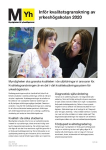
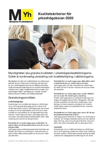
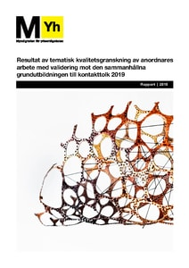
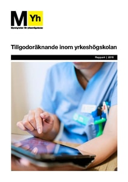

Publikationer
Här hittar du Myndigheten för yrkeshögskolans rapporter, faktablad, broschyrer, informationsblad och andra publikationer. Du kan filtrera typ av publikation, område och utgivningsår nedan.

Faktablad: inför kvalitetsgranskning av yrkeshögskoleutbildningar 2020
Utgiven: 2019-11-01 Myndigheten granskar löpande kvaliteten i de utbildningar vi ansvarar för. Syftet är framförallt att...

Faktablad: kvalitetskriterier för yrkeshögskolan 2020
Utgiven: 2019-10-31 Myndigheten har tagit fram kvalitetskriterier som tillsammans beskriver det som anses vara en utbildning...

Resultat av tematisk kvalitetsgranskning av anordnares arbete med validering mot den sammanhållna grundutbildningen till kontakttolk 2019
Utgiven: 2019-10-17 I denna rapport presenteras det samlade resultatet från myndighetens tematiska kvalitetsgranskningar...

Tillgodoräknande inom yrkeshögskolan
Utgiven: 2019-10-15 Utgångspunkten för utredningen är att ökad användning av validering och tillgodoräknande i yrkeshögskolan...